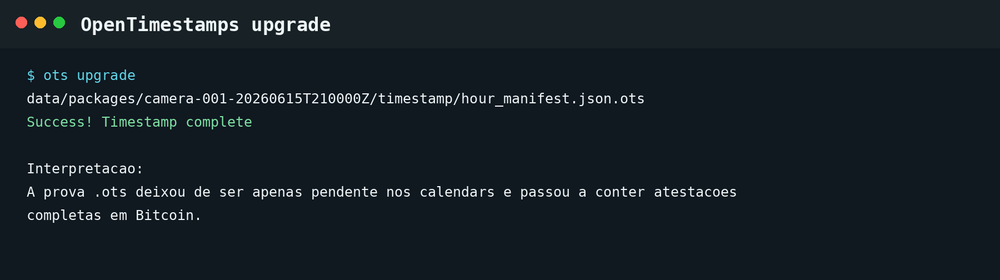
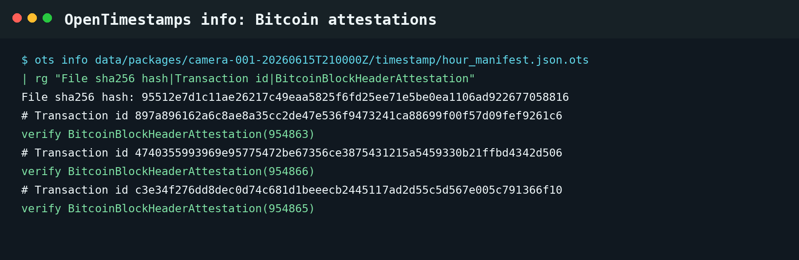
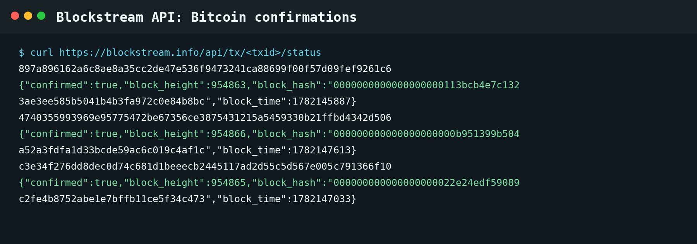
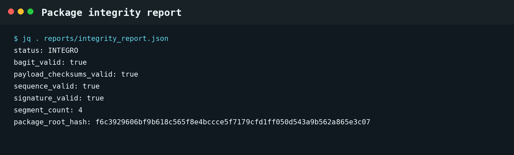

Provas do timestamp em Bitcoin
Evidências geradas a partir do pacote camera-001-20260615T210000Z,
usando OpenTimestamps para o manifesto assinado do pacote de custódia.
Voltar ao artigo · Abrir slides


ots info.
